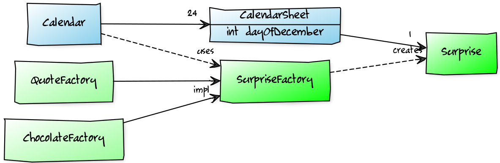
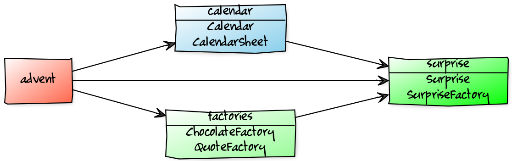
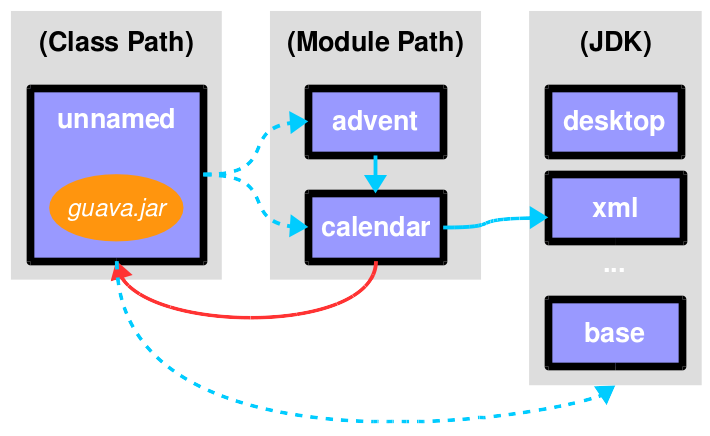
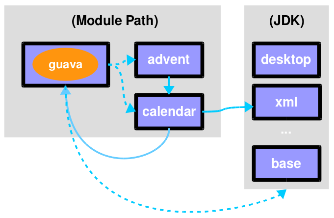

public static void main(String[] args) {
List<SurpriseFactory> factories = asList(
new ChocolateFactory(), new QuoteFactory());
Calendar cal = Calendar.create(factories);
println(cal.asText());
}The Java 9 Module System
Beyond the Basics
Public Service Announcement
I assume you know the JPMS basics
there’s much to talk about
⇝ you pick and chooseslides at slides.codefx.org
Java Module System Basics
The very short version
Modules
Modules
have a unique name
express their dependencies
(readability ⇝ reliable configuration)export specific packages
and hide the rest
(accessibility ⇝ strong encapsulation)
Jigsaw Advent Calendar
A simple example
Find it on GitHub!
Structure

Code
Module Structure

Module Structure
module surprise {
// requires no other modules
exports org.codefx.advent.surprise;
}module calendar {
requires surprise;
exports org.codefx.advent.calendar;
}module factories {
requires surprise;
exports org.codefx.advent.factories;
}module advent {
requires calendar;
requires factories;
requires surprise;
}Module Creation
Compilation, Packaging, Execution
# compile all modules at once
$ javac -d classes
--module-source-path "src"
--module advent
# package one by one, eventually advent
$ jar --create
--file mods/advent.jar
--main-class advent.Main
${*.class}
# launch the application
$ java --module-path mods --module adventAdvanced Java Module System
Going Deeper...
Transitive Dependencies
Not all dependencies are created equal:
most are used within a module
some are used on the boundary
between modules
Transitive dependencies are about the latter.
Exposing dependencies
Example in calendar exposing surprise:
public static Calendar create(
List<SurpriseFactory> factories) {
// ...
}⇝ Module calendar is unusable without surprise!
Try and Error?
How can users of exposing module
determine required dependencies?
Try and error?
No!
Implied Readability
Exposing module can mark dependencies
on exposed modules with
requires transitive:
module A {
requires transitive B;
}A reads B as usual
modules reading A will read B
without having to require it
⇝ A implies readability of B
Implied Readability
Applied to the advent calendar:
module calendar {
requires transitive surprise;
// ...
}
module factories {
requires transitive surprise;
// ...
}Further Applications
Implied readability is surprisingly versatile
aggregator modules
splitting modules up
even merging modules
renaming modules
Aggregator Modules
Making it easier to consume
calendar, factories, surprise:
module adventcalendar {
requires transitive calendar;
requires transitive factories;
requires transitive surprise;
}Splitting Modules
If factories gets split into
api, chocolate, and quotes:
module factories {
requires transitive factories.api;
requires transitive factories.chocolate;
requires transitive factories.quotes;
}Merging Modules
If calendar, factories, surprise
are merged into adventcalendar:
module calendar {
requires transitive adventcalendar;
}
module factories {
requires transitive adventcalendar;
}
module surprise {
requires transitive adventcalendar;
}Careful: Users suddenly depend on a large module!
Renaming Modules
If factories becomes surprisefactories:
module factories {
requires transitive surprisefactories;
}Summary
With A requires transitive B:
A reads B
any module reading A reads B
Applications:
make sure API is usable
without further dependenciesaggregator modules
splitting, merging, renaming modules
Optional Dependencies
Not all dependencies are equally required:
some are needed for a module to function
some can be absent and code adapts
some are only needed to enhance
another module’s features
Optional dependencies are about the latter two.
Use Cases
Adapting code:
a library may be absent from some deployments
code is aware and does not call absent modules
Enhancing a module:
a project may provide usability functions
for other librariessuch code can not be called if library modules
are absent
Conundrum
With what we know so far:
for code to compile against another module
that module has to be requireda required module has to be present
at launch time
⇝ If a module’s types are used
it has to be present at run time
(Reliable configuration!)
Optional Dependencies
Dependency can be marked requires static:
module A {
requires static B;
}at compile time: A requires B as usual
at run time:
if B is present, A reads B
otherwise, app can launch
but access to B can fail
Adapting Code
Assuming each factory has its own module,
advent may not need both all the time:
module advent {
requires calendar;
requires surprise;
requires static factories.chocolate;
requires static factories.quote;
}Adapting Code
Checking whether module is present:
Optional<SurpriseFactory> createChocolateFactory() {
if (isModulePresent("factories.chocolate"))
return Optional.of(new ChocolateFactory());
else
return Optional.empty();
}Enhancing A Module
Hypothetical library uber-lib provides
usability functions for various libraries.
module uber.lib {
requires static com.google.guava;
requires static org.apache.commons.lang;
requires static org.apache.commons.io;
requires static io.vavr;
requires static com.aol.cyclops;
}Assumptions:
nobody calls into Guava part without using Guava
no runtime checks necessary
Summary
With A requires static B:
at compile time: A requires B as usual
at runtime: B may be absent
Use to prevent absence of optional dependencies
from preventing application launch:
modules with code adapting to absense
utility libraries that aren’t called
without that dependency
Services
Consumers and implementations
of an API should be decoupled.
Service locator pattern:
service registry as central arbiter
implementors inform registry
consumers call registry to get implementations
In Java:
ServiceLoaderis the registrymodules can interact with it
Services
Module Declarations:
// consumer
module A {
uses some.Service;
}
// provider
module B {
provides some.Service
with some.Type;
}Services
A never "sees" providers like B
module system picks up all providers
A can get providers from
ServiceLoader
ServiceLoader.load(Service.class)Factory Services
module advent {
requires calendar;
uses surprise.SurpriseFactory;
}
module factory.chocolate {
requires surprise;
provides surprise.SurpriseFactory
with factory.quote.ChocolateFactory;
}
module factory.quote {
requires surprise;
provides surprise.SurpriseFactory
with factory.quote.QuoteFactory;
}Factory Services
public static void main(String[] args) {
List<SurpriseFactory> factories = ServiceLoader
.load(SurpriseFactory.class).stream()
.map(Provider::get)
.collect(toList());
Calendar cal = Calendar.create(factories);
System.out.println(cal.asText());
}Summary
To decouple API consumers and providers:
consumer
uses Serviceprovider
provides Service with Impl
Module system is service locator;
request implementations from ServiceLoader:
ServiceLoader.load(Service.class)
Qualified Exports
So far, exported packages are visible
to every reading module.
What if a set of modules wants to share code?
Known Problem
Similar to utility classes:
if class should be visible outside of package,
it has to be public ⇝ visible to everybodyif package should be visible outside of module,
it has to be exported ⇝ visible to everybody
Module system fixes the former.
What about the latter?
Qualified Exports
module A {
exports some.pack to B;
}B can access
some.pack
as if regularly exportedother modules can not access it
as if not exported at all
Factory Utilities
To ease implementation of SurpriseFactory:
create new module factory
add class
AbstractSurpriseFactoryexport that package only to
factory implementation modules
module factory {
requires transitive surprise;
exports factory
to factory.chocolate, factory.quote;
}Summary
With A exports pack to B:
only B can access types in
some.packother modules behave as if
some.pack
is not exported
Use to share sensible code between modules.
Reflective Access
Exporting a package makes it public API:
modules can compile code against it
clients expect it to be stable
What if a type is only meant
to be accessed via reflection?
(Think Spring, Hibernate, etc.)
Open Packages
module A {
opens some.pack;
}at compile time:
types insome.packare not accessibleat run time:
all types and members insome.pack
are accessible
A qualified variant (opens to) exists.
Open Modules
open module A {
// no more `opens` clauses
}The same as open packages
but for all of them!
Summary
With open modules or open packages:
code can be made accessible
at compile time onlyparticularly valuable to open
for reflection
Use to make types available for reflection
without making them public API.
Command Line Arguments
The module system is pretty strict but…
… not all modules are well-designed
… not all use cases were intended
What to do then?
Command Line Arguments to the rescue!
(I often call them "escape hatches".)
Command Line Arguments
All command line flags can be applied
to javac and java!
When used during compilation,
they do not change the resulting
module descriptor!
Add Modules
If a module is not required,
it might not make it into the module graph.
Help it get there with --add-modules:
$ java --module-path mods
# --add-modules <module>(,<module>)*
--add-modules factories
--module adventAdd JavaEE Modules
JavaEE modules are not resolved by default!
java.activation
java.annotations.common
java.corba
java.transaction
java.xml.bind
java.xml.ws
They need to be added with --add-modules!
Add Readability Edges
Maybe a module in the graph is not readable
by another but you need it to be.
Add readability edges with --add-reads:
$ java --module-path mods
# --add-reads <module>=<target>(,<more>)*
--add-reads advent=factories
--module adventAdd Exports
A common case:
A module needs types that
the owning module doesn’t export.
Export them with --add-exports:
$ java --module-path mods
# --add-exports <module>/<package>=<target>
--add-exports factories/factories.quotes=advent
--module adventUse target ALL-UNNAMED to export to all modules.
Open Packages
Another common case:
A module reflects on types from a package that
the owning module doesn’t open.
Open packages with add-opens:
$ java --module-path mods
# --add-opens <module>/<package>=<target>
--add-opens factories/factories.quotes=advent
--module adventUse target ALL-UNNAMED to open to all modules.
(It is not possible to open an entire module.)
Summary
Edit module graph with:
--add-modulesto add modules--add-readsto add readability edges--add-exportsto export packages to modules--add-opensto open packages to modules
The latter two accept ALL-UNNAMED as target.
Migration Challenges
What to look out for
when running on JDK 9
Break Stuff
Some internal changes break existing code!
Just by running on JDK 9
(even without modularizing the application).
Internal APIs
internal APIs are:
all in
sun.*most in
com.sun.*
(unless marked@jdk.Exported)
encapsulated at compile time
accessible at run time
for some timecritical APIs may survive longer
(e.g.sun.misc.Unsafe)
What to look for?
JDeps can report internal dependencies:
$ jdeps --jdk-internals
-recursive --class-path 'libs/*'
scaffold-hunter-2.6.3.jar
> batik-codec.jar -> JDK removed internal API
> JPEGImageWriter -> JPEGCodec
> guava-18.0.jar -> jdk.unsupported
> Striped64 -> Unsafe
> scaffold-hunter-2.6.3.jar -> java.desktop
> SteppedComboBox -> WindowsComboBoxUIWhat else to look for?
look for reflection, especially
Class::forNameAccessibleObject::setAccessible
recursively check your dependencies!
What to do?
fix your code
contact library developers
look for alternatives
(in the JDK or other libraries)consider command line flags
--add-exports,--add-opens, or
--permit-illegal-access
Split Packages
packages should have a unique origin
no module must read the same package
from two modules
The implementation is even stricter:
no two modules must contain
the same package (exported or not)split packages on class path
are inaccessible
Examples
some libraries split
java.xml.*, e.g. xml-apissome JBoss modules split, e.g.,
java.transaction,java.xml.wsjsr305 splits
javax.annotation
What to look for?
JDeps reports split packages:
$ jdeps -summary
-recursive --class-path 'libs/*'
project.jar
> split package: javax.annotation
> [jrt:/java.xml.ws.annotation,
> libs/jsr305-3.0.2.jar]What to do?
Your artifacts:
rename one of the packages
merge package into the same artifact
merge the artifacts
place both artifacts on the class path
Otherwise:
upgrade the JDK module with the artifact
--patch-modulewith the artifact’s content
Java EE Modules
java.activation (
javax.activation)java.corba (CORBA packages)
java.transaction (
javax.transaction)java.xml.bind (
javax.xml.bind.*)java.xml.ws (JAX-WS packages)
java.xml.ws.annotation (
javax.annotation)
These are
deprecated for removal
not resolved by default
What to look for?
JDeps shows dependencies on platform modules:
$ jdeps -summary sh-2.6.3.jar
> sh-2.6.3.jar -> java.base
> sh-2.6.3.jar -> java.datatransfer
> sh-2.6.3.jar -> java.desktop
> sh-2.6.3.jar -> java.logging
> sh-2.6.3.jar -> java.prefs
> sh-2.6.3.jar -> java.sql
> sh-2.6.3.jar -> java.xmlWhat to do?
pick a third-party implementation
add Java EE platform modules
with--add-modules
Run-Time Images
new JDK/JRE layout
internal JARs are gone (e.g.
rt.jar,tools.jar)JARs are now JMODs
application class loader is no
URLClassLoader
(no way to append to its class path)new URL schema for run-time image content
What to look for?
does the code rummage around
in the JDK / JRE folder?are URLs to JDK classes / resources handcrafted?
search for casts to
URLClassLoader
Obsolete
Compact Profiles
Extension Mechanism
Endorsed Standards Override Mechanism
Boot Class Path Override
JRE version selection with
-version:N
But wait, there’s more!
Yes, yes, there’s more:
Java 9 Migration Guide
(tiny.cc/java-9-migration)
Background:
And there are new version strings:
goodbye
1.9.0_31, hello9.1.4
(soon18.3?)
General Advice I
The most relevant for most applications:
internal APIs
split packages
Java EE modules
General Advice II
get your code in shape
(and prevent relapses)check your dependencies and tools
if any are suspicious
(automatically true for IDEs, build tools):make sure they’re alive
get them up to date!
or look for alternatives
download Java 9 and try it!
Incremental Modularization
Moving Into Module Land
Why Is It Even An Option?
most module systems are "in or out",
but modularized JDK and legacy JARs
have to cooperate!there is a boundary between
legacy and modules
Incremental modularization means
moving that boundary.
Enablers
Incremental modularization is enabled by two features:
Unnamed Module(s)
Automatic Modules
And the fact that module and class path coexist:
modular JARs can be put on either
"regular" JARs can be put on either
The Unnamed Module
Why The Class Path "Just Works"
Definition
The Unnamed Module
contains all JARs on the class path
(including modular JARs).
has no name (surprise!)
can read all modules
exports all packages
Inside the unnamed module
"the chaos of the class path" lives on.
Example
Put all your JARs on the class path.

No Access
what if your code was modularized?
and your dependencies were not?proper modules can not depend on
"the chaos on the class path"this is not possible:
module advent { requires unnamed; }
No Access

Automatic Modules
From Modules To The Class Path
Definition
An Automatic Module
is created for each "regular" JAR
on the module path.
name defined by manifest entry
AUTOMATIC-MODULE-NAMEor
derived from JAR namecan read all modules
(including the Unnamed Module)exports all packages
Example
put
guava-19.0.jaron the module paththen this works:
module advent { requires guava; }
Example

What Goes Where?
| Class Path | Module Path | |
|---|---|---|
Regular JAR | Unnamed Module | Automatic Module |
Modular JAR | Unnamed Module | Explicit Module |
Unnamed or named module?
The user decides, not the maintainer!
Modularization Strategies
Three strategies emerge:
bottom-up
top-down
inside-out
Bottom-Up
Works best for projects without
unmodularized dependencies
(libraries).
turn project JARs into modules
they still work on the class path
clients can move them to the module path
whenever they want
Top-Down
Required for projects with
unmodularized dependencies
(applications).
turn project JARs into modules
Top-Down
modularized dependencies:
require direct ones
put all on the module path
unmodularized dependencies:
require direct ones with automatic name
put direct ones on the module path
put others on the class path
Top-Down
When dependencies get modularized:
hopefully the name didn’t change
if they are already on the module path,
nothing changesotherwise move them there
check their dependencies
Inside-Out
What about published projects with
unmodularized dependencies
(libraries)?
top-down mostly works
but there’s an important detail
about automatic module names!
Inside-Out
Automatic Module Names
automatic module name may
be based on JAR namefile names can differ
across build environmentsmodule name can change
when project gets modularized
⇝ Such automatic module names are unstable.
Inside-Out
Impossible Module Requirements
dependencies might require the same
module by different namesthe module system does not support that
there is no way to launch that application!
⇝ Do not publish modules
that depend on automatic modules
whose names are based on file names!
Inside-Out
Manifest Entry
thanks to manifest entry,
projects can publish their module nameassumption is that it won’t change
when project gets modularizedthat makes these names stable
⇝ It is ok to publish modules
that depend on automatic modules
whose names are based on manifest entry.
About Nicolai Parlog

Want More?
⇜ Get my book!
You can hire me:
training (Java 8/9, JUnit 5)
consulting (Java 8/9)
What About OSGi?
Brief comparison
of Jigsaw and OSGi
Jigsaw vs. OSGi
OSGi Bundles:
are JARs with a descriptor (
MANIFEST.MF)have a name
import packages or bundles
define public API by exporting packages
Jigsaw vs. OSGi
| Jigsaw | OSGi | |
|---|---|---|
Versioning | not at all | packages and modules |
Run-time Behavior | mostly static | dynamic |
Services | declarative via | declarative or programmatically; |
Class Loaders | operates below | one per bundle |
Image Credits
Introduction
puzzle-people: Kevin Dooley (CC-BY 2.0)
binary-code: Christiaan Colen (CC-BY-SA 2.0)
ball-of-mud-2: Andi Gentsch (CC-BY-SA 2.0)
jar-hell: Wellcome Library, London (CC-BY 4.0)
Project Jigsaw
flag-amsterdam: George Rex (CC-BY-SA 2.0)
puzzle-cubed: David Singleton (CC-BY 2.0)
Java Module System
puzzle-piece-green:
StockMonkeys.com (CC-BY 2.0)puzzle-pieces-put-together:
Ken Teegardin (CC-BY-SA 2.0)iceberg:
NOAA’s National Ocean Service (CC-BY 2.0)class and module diagrams:
Nicolai Parlog (CC-BY-NC 4.0)
Incremental Modularization
keep-out: Brian Smithson (CC-BY 2.0)
garbage-only: Peter Kaminski (CC-BY 2.0)
golden-gate: Nicolas Raymond (CC-BY 2.0)
confusion: Procsilas Moscas (CC-BY 2.0)
module diagrams:
Nicolai Parlog (CC-BY-NC 4.0)
Migration Challenges
broken-glass:
Eric Schmuttenmaer (CC-BY-SA 2.0)internals: David French (CC-BY 2.0)
cut: Jinx! (CC-BY-SA 2.0)
cells: Jonathan Lin (CC-BY-SA 2.0)
obsolete: Trevor King (CC-BY 2.0)
sign: Duncan Harris (CC-BY-SA 2.0)
Rest
question-mark: Milos Milosevic (CC-BY 2.0)
bundles: Danumurthi Mahendra (CC-BY 2.0)